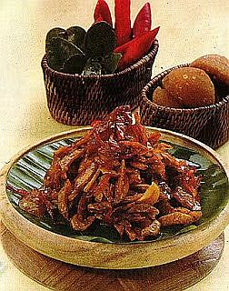

Sambal Goreng Jengkol

Bahan :
- Jengkol rebus 250 gram, iris tipis, goreng
- Cabai merah 2 buah, iris panjang tipis, goreng
- Air asam 1 sdt
- Daun salam 1 lembar
- Lengkuas 1 cm, memarkan
- Gula merah sisir 2 sdt
- Minak goreng 2 sdm
- Gula pasir 1 sdt
Bumbu halus :
- Bawang putih 2 siung
- Bawang merah 4 butir
- Cabai merah 2 buah
- Cabai rawit 2 buah
- Garam secukupnya
Cara membuat :
- Panaskan minyak, tumis bumbu halus, daun salam dan lengkuas hingga harum.
- Tambahkan gula merah, gula pasir dan air asam, masak hingga kental.
- Tambahkan jengkol dan cabai merah. Masak hingga bumbu meresap.
Tips : Jika ingin jengkol tidak keras, iris jengkol tipis-tipis dan tidak usah digoreng.